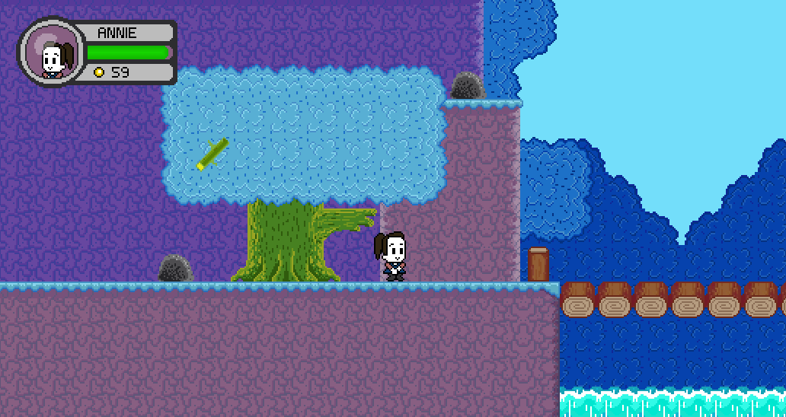

Journey to the Center of Hawkthorne
An 8bit 2D platformer sprinkled with a few RPG elements.
Based off an episode of NBC's Community that ran back in 2012
- Our tools:
- Meta-Features:
- Links:
An 8bit 2D platformer sprinkled with a few RPG elements.
Based off an episode of NBC's Community that ran back in 2012